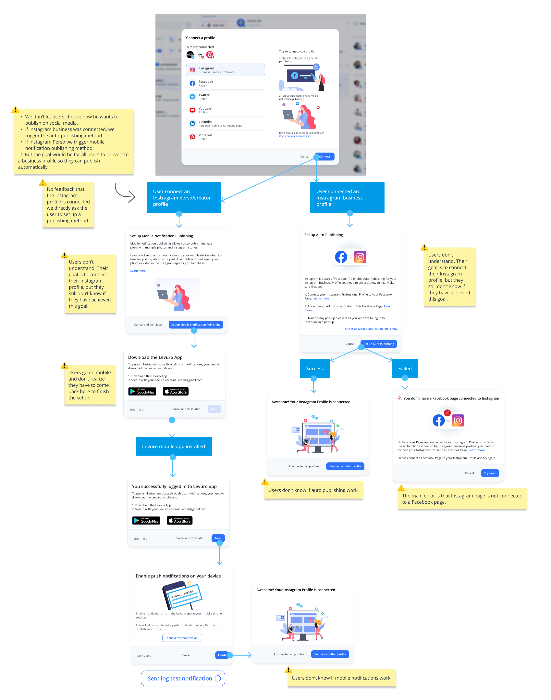
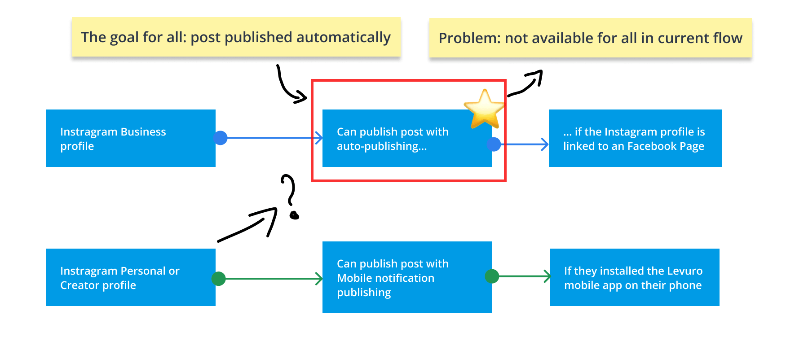
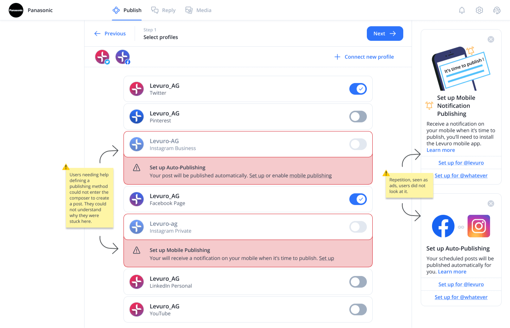
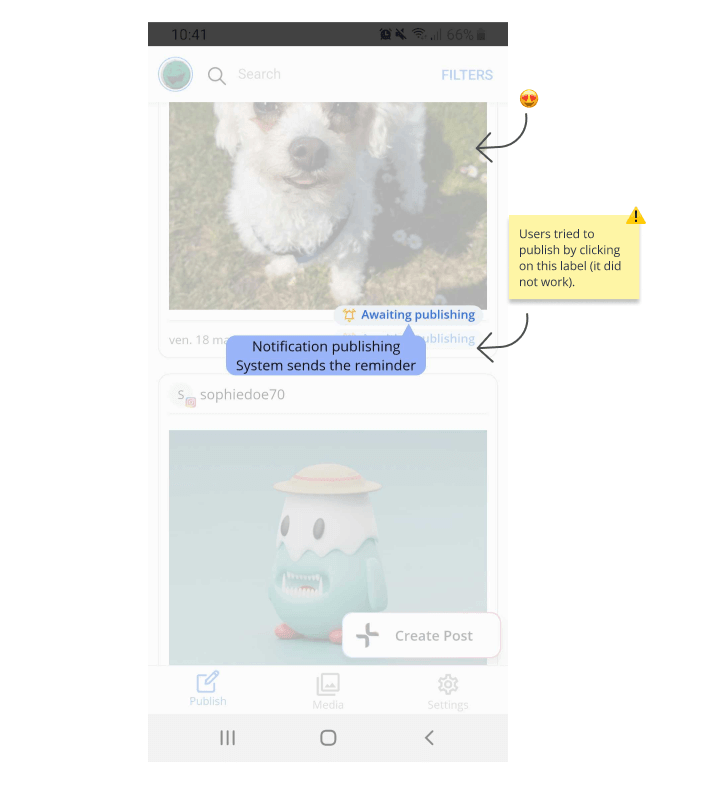
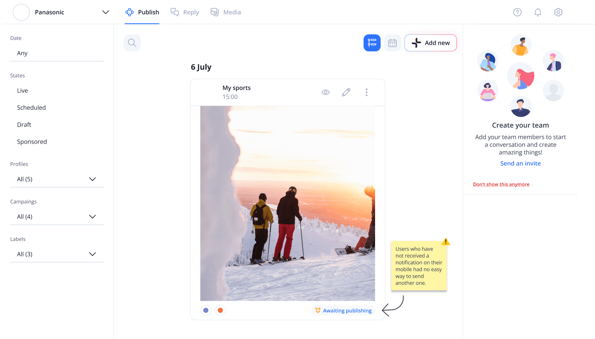
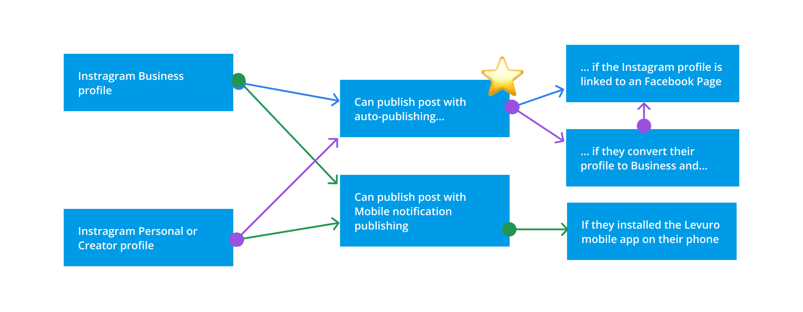
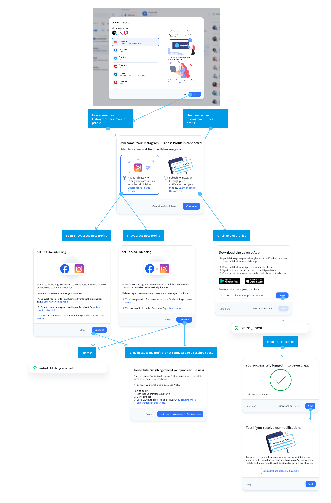
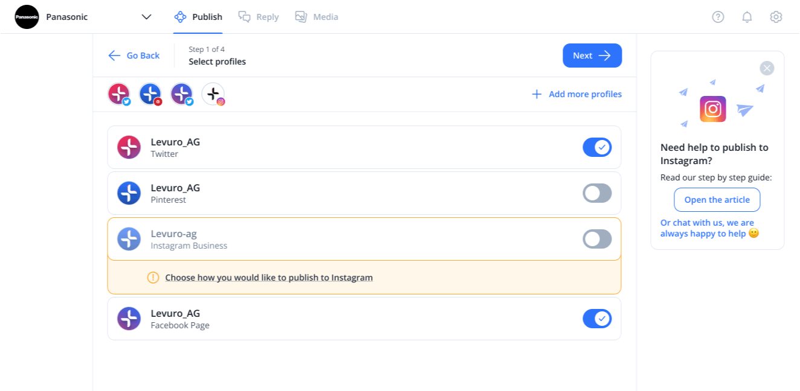
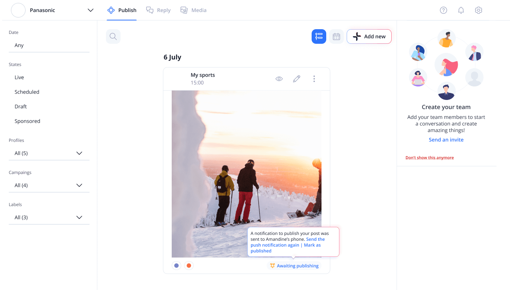
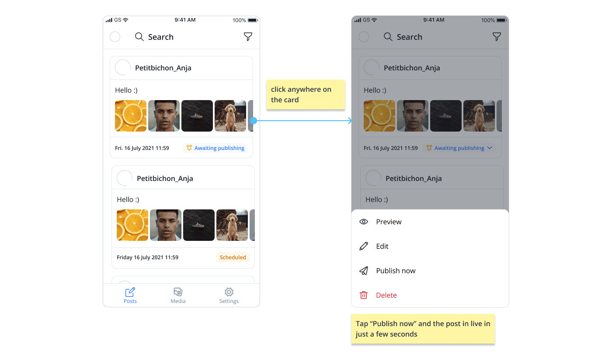

Redesigning Levuro's main failure path: The connection of an Instagram profile and the definition of a publishing method.
My role: UX Lead, the sole designer at this early-stage startup. I identified and prioritized the problem, then owned the end-to-end design, working closely with a cross-functional team of 4 developers and the CEO.
When: 2022.
Scope: Instagram profile connection and publishing setup, across Levuro's web and mobile apps.
Impact
- Grew Instagram accounts with a defined publishing method from 30% to over 50% within a few months, hitting our original 50% target.
- Getting there took more than the redesign: we also emailed users whose Instagram profile still lacked a publishing method, inviting them to set one up.
- Cut Instagram-related customer support requests by half, pairing the product changes with a rebuilt help center.
- Lowered the share of accounts with an Instagram profile connected that got deleted from 63% to 40%, still an area we kept pushing on.
Introduction
About the company
Levuro is a Swiss startup building a social media and live stream management tool for Instagram, Twitter, Facebook, LinkedIn, and YouTube. Users can publish via web or mobile apps.
Problem statement
More than half of Levuro’s users have Instagram accounts and expect automatic publishing, but many struggle to connect profiles and set up the correct publishing method. The complex flow leads to frustration and high churn, with users abandoning or deleting their accounts.
Solution
I redesigned the user flow to make automatic publishing an option for all users, guiding them to convert their profiles to business accounts when needed. I simplified the setup process, rewrote the guidance text to be clear and jargon-free, and removed barriers so users could draft posts before selecting a publishing method. This allowed users more flexibility and control over how they publish their content.
Context
The data: what analytics showed
I surfaced this during monthly product discussions using data analytics, beta user feedback, and customer support reports. Key finding: half of Levuro’s users had a connected Instagram account, but 70% of those accounts had no publishing method set up, meaning they couldn’t publish through Levuro at all. Users stuck this way were deleting their accounts.
The why: what user testing revealed
The data told me what was broken, but not why. With competition for social media tools intense, fixing this was critical to reducing churn and converting more users to paid accounts, so I ran usability testing with users stuck at this step to find out why they were failing to set up a publishing method.
What success looks like
Defining success metrics and product goals
User test findings
Through beta user feedback, usability testing, analytics, and customer support data, we identified multiple pain points and high user frustration. While we uncovered more than 10 bugs, the primary issue was confusion around the user flow for defining a publishing method for Instagram.
Finding 1: Users don’t understand why they need to define a publishing method for their Instagram profile, and those who attempt it struggle with the unclear instructions.
- Users were unsure if their Instagram profile was properly connected to Levuro.
- Many didn’t understand why they had to choose a publishing method immediately, as their main goal was simply to connect their profile.
- Modal dialogues lacked clarity, particularly in explaining that auto-publishing requires an Instagram business profile connected to a Facebook page. This led to confusion, with users not knowing why the feature wasn’t working.
On figure 1, you can see the user's pain points when they try to define a publishing method for their Instagram profiles.

Figure 1: Pain points when trying to define a publishing method for Instagram profiles.
Finding 2: Our current flow restricts automatic publishing to business profiles, which frustrated many users (fig 2). They expected this feature to be available for all Instagram accounts, as advertised, and it was a key reason they were willing to pay for the tool.

Figure 2: The current flow don't allow all users to use auto publishing.
Finding 3: Users were blocked from creating posts if they hadn’t defined a publishing method.
- Without this step, users couldn’t open the composer to create or schedule posts, preventing them from accomplishing what they came to Levuro for (fig 3).
- Many users became confused and disconnected their Instagram profiles, then reconnected without resolving the issue.

Figure 3: Without a publishing method, users are stuck.
Finding 4: Some users who opted for mobile notifications didn’t receive them and had no easy way to resend the notification.
- Users tried opening the Levuro mobile app directly to publish but found it didn’t work (fig 4).
- There is no easy way to send another push notification if users didn’t receive the first one or made a mistake while opening it (fig 5).

Figure 4: Using the mobile app to publish if they don't receive the notification didn't work.

Figure 5: No easy way to trigger a new notification from the web app.
These findings revealed critical issues in the user flow for Instagram publishing, particularly around setting up and understanding the auto-publishing feature. Users were confused by unclear instructions, limited by restrictive publishing options, and blocked from creating posts without properly setting up a publishing method. This led to significant frustration and abandonment of the platform.
Next Steps: Based on these insights, we took the following actions:
1.
Redesign the user flow to make auto-publishing available to all users and guide them through converting to a business profile if needed.
2.
Clarify modal dialogues by simplifying the language and offering clearer instructions on connecting profiles and setting up publishing methods.
3.
Allow post creation even if the publishing method isn’t defined, so users can create drafts and set up publishing later.
4.
Add a feature for resending mobile notifications easily from both the mobile app and web app, ensuring users can complete the publishing process.
Design solutions
1. Redesign the user flow to make auto-publishing available to all users and guide them in converting to a business profile, if needed.
I introduced a new user flow that enables Business, Personal, and Creator profiles to publish posts automatically on Levuro (Figure 6). This update empowers users to choose how they want to publish their Instagram posts, with guidance provided for converting to a business profile if they wish to enable automatic publishing (Figure 7).

Figure 6: New user flow for Instagram auto-publishing.

Figure 7: Updated flow for connecting an Instagram account and defining a publishing method.
2. Allow post creation even if a publishing method isn’t defined, so users can create drafts and set up publishing later.
By enabling users to draft posts without immediately defining a publishing method, we made the process more intuitive and motivational. Users can invest time in creating the perfect social media post and then define their publishing method when scheduling the post (fig 8).

Figure 8: Updated interface for creating drafts and defining publishing methods later.
3. Allow users to resend the mobile notification directly from the web app.

Figure 9: Updated flow for resending notifications and publishing from the web app.

Figure 10: An easy way to publish from the mobile app if users don’t receive the push notification.
Conclusion
After one month of implementation, we saw the first improvements, which kept building over the following months:
- Instagram-related support requests dropped by half, thanks to the product changes and a rebuilt help center.
- Screen recordings indicated that most users successfully resolved issues such as connecting their Instagram profiles to a Facebook page or converting to a business account by following the new, clearer modal dialogs.
- Instagram accounts with a defined publishing method rose from 30% to over 50% within a few months, hitting our original target. We also emailed users whose Instagram still lacked a publishing method, inviting them to set one up, which helped drive that increase.
- The share of accounts with an Instagram profile connected that got deleted fell from 63% to 40%, still an area we kept working to improve.
What’s next?
We will continue monitoring the success rate for Instagram publishing setup. With the Instagram API evolving, including new features like automatic publishing for reels, we’ll need to assess potential updates to the user flow. This may involve revising help articles, creating new ones, and adjusting the UX to ensure clarity and relevance.
Extra: UX Writing
I focused on giving users clear choices on how to publish their posts and guiding them to automatic publishing.
Underneath are the new modal dialogs allowing users to choose how they want to publish. With the text, we explained the difference between the 2 methods and indicated what they needed to do to use Auto-publishing.
Rewriting confusing modal dialog.
Most users could not understand what was written, as a result the setting up of a publishing method often failed.
My objective in rewriting the modal dialogs was to:
- Guide users step by step in connecting their profiles and defining a publishing method.
- Eliminate technical jargon to boost user confidence.
- Use dynamic, conversational language that’s easy to understand.
- Ensure clear and concise error handling, offering solutions so users can resolve issues independently.
You can see below the modal before and after.

{kind=link}
{kind=link}
{kind=link}
{kind=link}
{kind=link}
{kind=link}
{kind=link}
{kind=link}
{kind=link}
{kind=link}
{kind=link}
{kind=link}
{kind=link}
{kind=link}
{kind=link}
{kind=link}
{kind=link}